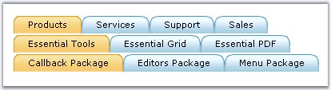
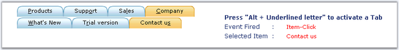

Hierarchical TabStrip
TabStrip allows you to align the tab elements hierarchically to create a multilevel tabstrip. Design the tabstrip structure either in the designer or programmatically and create the TabStrip.

Figure 293: 3 - level tabstrip
Keyboard Support
|
Property |
Description |
|
KeyboardShortcut |
Specifies the shortcut key that should be used to access an item. |
The tab elements can be accessed using keyboard shortcut keys. This feature can be enabled by setting KeyboardShortcut property for every item to the shortcut key that should be used to access the elements.

Figure 294: TabStrip with KeyboardShortcut feature